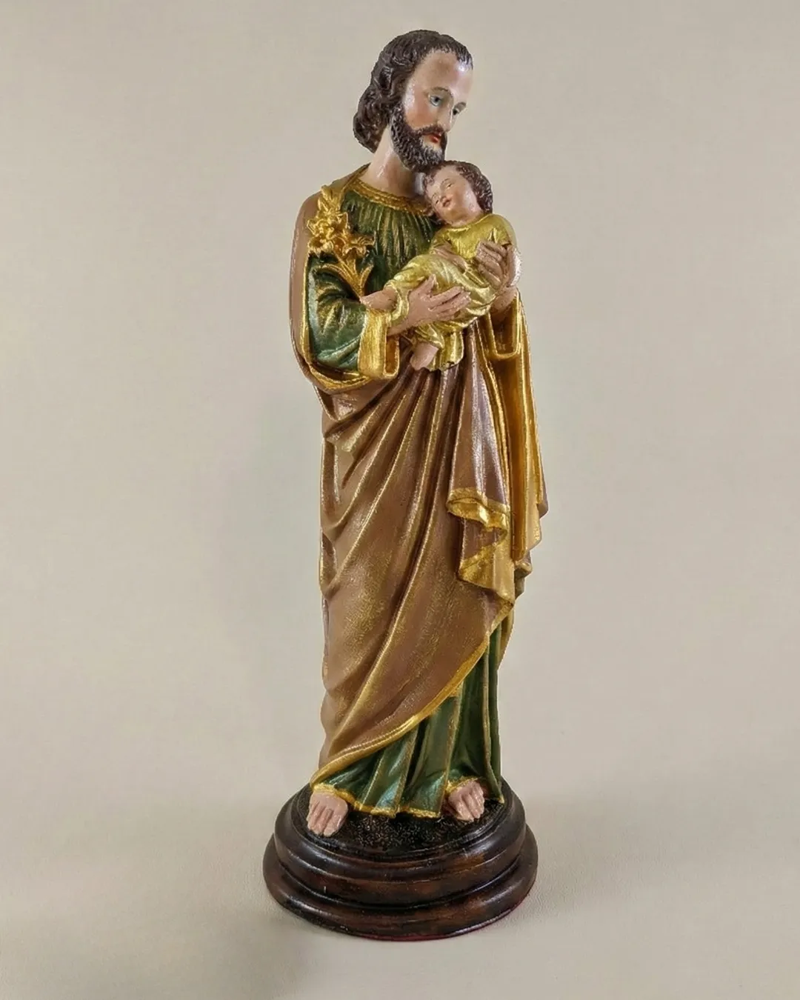
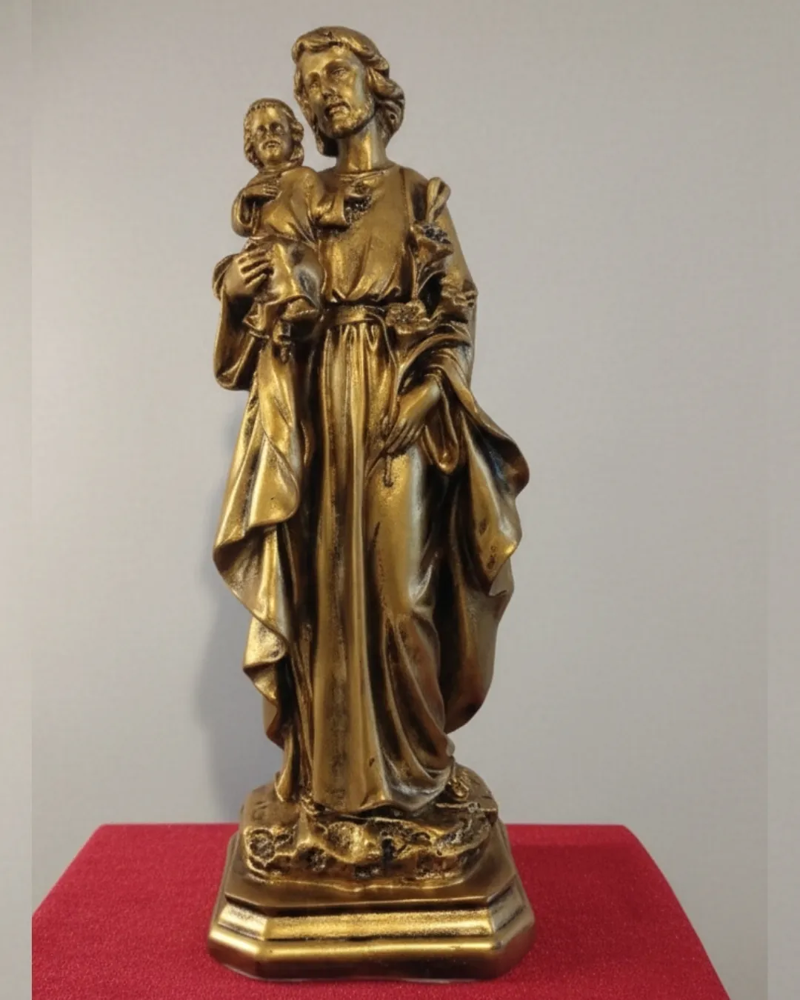
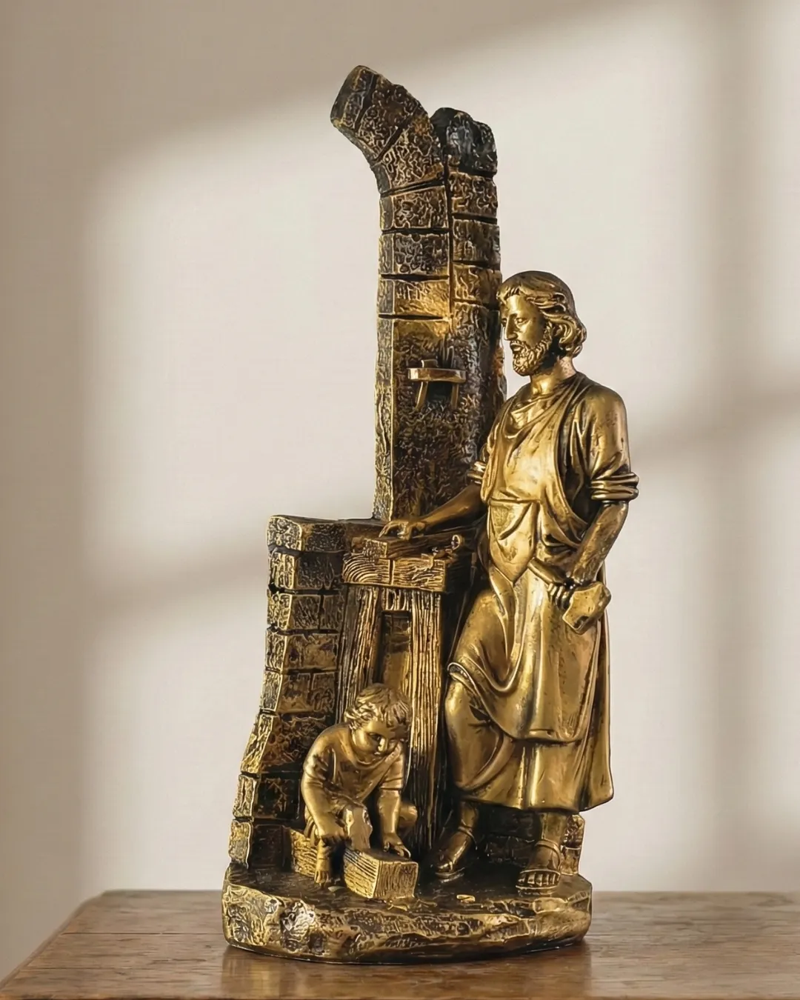
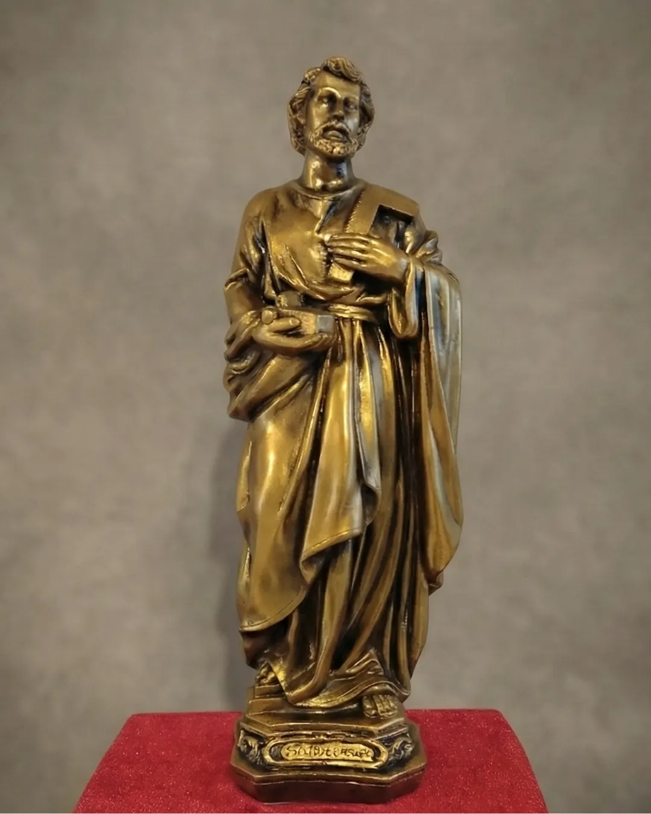
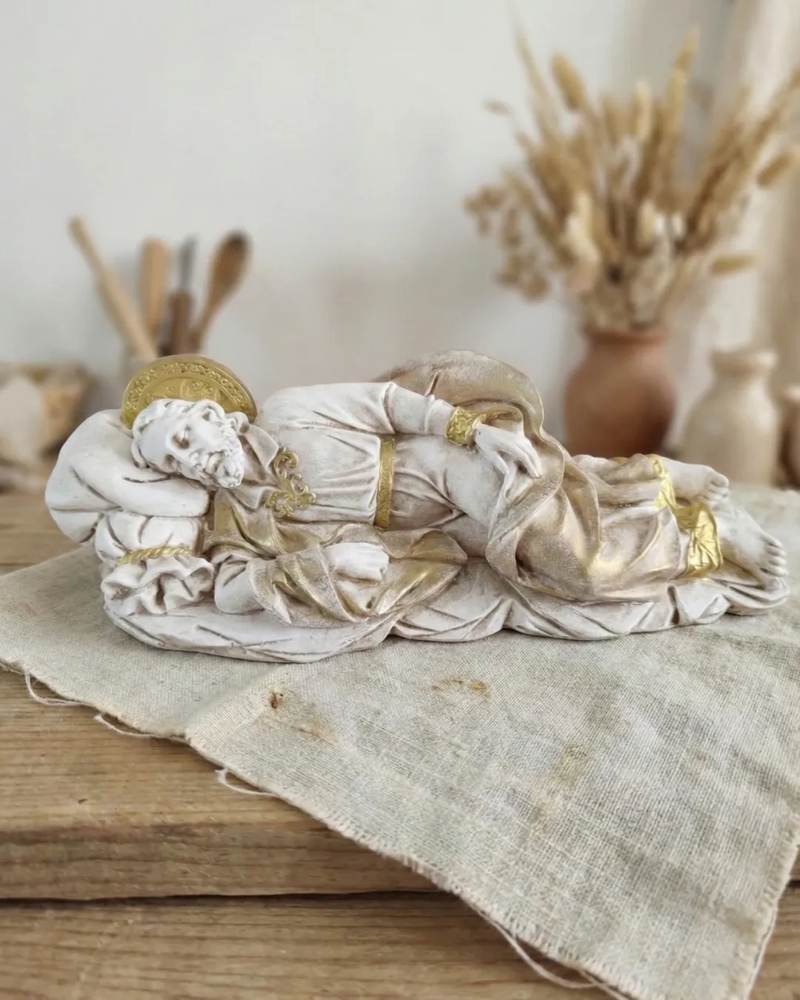
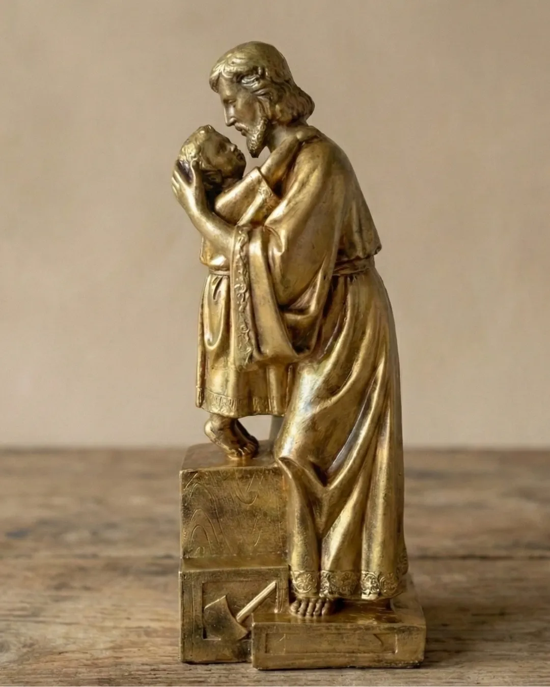

Em tempos incertos, resgate a segurança de ter o Patrono da Igreja guardando sua porta.
Exemplo de fidelidade, amor e serviço. O marido perfeito que toda esposa sonha para suas filhas.
Um lembrete diário de que o sustento da sua casa é sagrado e abençoado.
Uma arte que inspira a oração sem precisar de palavras. Paz imediata ao olhar.
"Chegou antes do prazo! A pintura é ainda mais linda pessoalmente. Senti uma paz enorme ao colocar no meu altar."
— Maria Helena, SP
★★★★★"Dei de presente para meu marido e ele chorou de emoção. Detalhes perfeitos. Obrigada Domo Atelier!"
— Ana Clara, MG
★★★★★"Estava com receio de comprar pela internet, mas o atendimento pelo WhatsApp foi excelente. A imagem é divina!"
— João Paulo, RJ
★★★★★"Cada vez mais, indivíduos e famílias vêm dedicando espaços dentro de seus lares para oração e leitura espiritual... o lar um verdadeiro refúgio de paz e comunhão."
— Domo Atelier
Uma imagem de São José no seu altar transforma seu cantinho de oração num verdadeiro santuário doméstico.
"A verdade, finalidade e meta da razão,
se exprime na beleza e se torna ela mesma na beleza..."
Fugimos da pressa industrial. Cada peça respeita o tempo da pintura manual e do douramento.
Nenhuma peça é igual à outra. Você terá uma obra única no seu altar.
Materiais selecionados para que esta imagem dure gerações, não apenas anos.
Honramos a história e a liturgia da Igreja. Arte que fortalece a fé.
Você está procurando o presente perfeito para...
Surpreenda seu amor com um símbolo de proteção e fidelidade para abençoar o novo lar.
Renove os votos com um presente que representa o amor construído na fé.
O presente ideal para abençoar a casa nova com a proteção de São José.
Quem ama a fé vai valorizar uma peça que transforma o lar em igreja.
🎁 Presente Exclusivo: O Kit do cordão de São José
Ao garantir sua vaga nesta campanha, sua imagem acompanha o Cíngulo de São José (Cordão com 7 nós) e a Oração Oficial.
Um sacramental antigo para pedir a pureza e a proteção do lar. (Item exclusivo de lançamento).
Sobre o Prazo (25 dias): Diferente de uma fábrica, nossa produção é limitada pelas mãos do artista. O prazo garante que sua peça receba o cuidado litúrgico que merece.
Sua imagem é pintada e finalizada manualmente, com:
Vale a pena esperar por algo abençoado.
💡 Dica: Se precisar para uma data específica, nos avise no WhatsApp que verificaremos a possibilidade de prioridade.
Pense no valor real:
Não é um gasto. É um investimento em arte sacra que abençoa sua família para sempre. Além disso, Oferecemos condições especiais (Parcelamento ou Desconto no PIX) para que o valor não seja um impedimento à sua devoção.
30cm é o tamanho ideal para:
Tem um espaço específico? Fale conosco no WhatsApp para indicarmos o tamanho perfeito!
Porque algumas versões de São José são LIMITADAS e exclusivas!
Trabalhamos com encomendas mensais limitadas para garantir a qualidade artesanal de cada peça.
⚠️ Restam poucas unidades para Março! Após 19/03, essas versões específicas não terão previsão de retorno — se houver novamente.
Não deixe sua família esperar mais. Garanta sua imagem agora!
Sua imagem é cuidadosamente embalada, garantindo a segurança de sua imagem para seguir viagem. Buscamos os melhores valores e prazos das transportadoras.
Assim que enviada, você receberá o código de rastreamento.
Prazo total: 25 dias úteis + tempo de frete
Fale conosco imediatamente pelo WhatsApp!
Sabemos que, às vezes, o tempo é curto e a data é especial. Faremos o possível para ajustar nosso cronograma e atender sua necessidade.
⚠️ Mas atenção: urgência extrema = confirmação imediata de vaga!
🔥 Garanta antes que esgote!






⚠️ Algumas versões estão ESGOTANDO!
⏰ Última chance para Março: 19/03
Não deixe para depois. Sua família merece a proteção de São José AGORA.
"Quem tem uma imagem em casa, tem um guardião espiritual."
🔥 Garantir Minha Imagem Agora!⚡ Vendas apenas até o dia de São José — após 19/03, esgota!